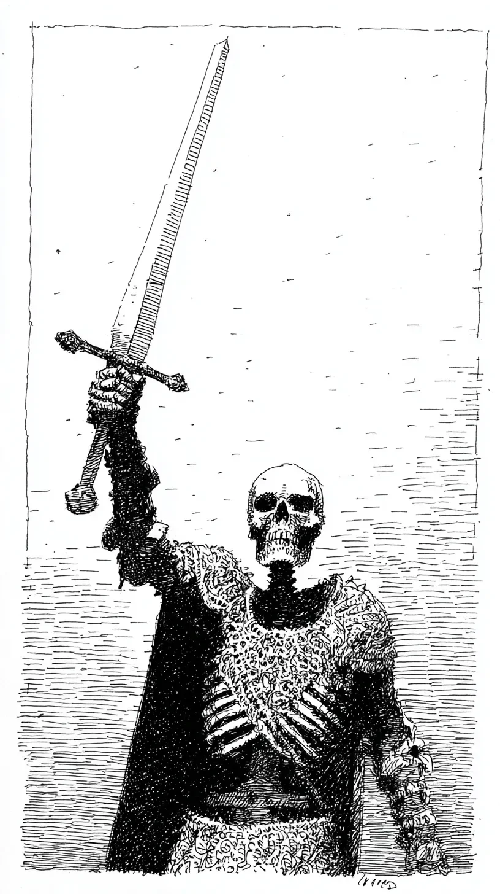

팔이 먼저 들리고 생각은 그 뒤에서 먼지처럼 늦게 일어났다.
The arm rose first, and thought stirred afterward, late as dust.
뼈만 남은 손아귀는 검의 무게를 기억해냈고 기억은 이유를 묻지 않았다.
The grip of bare bone recalled the sword’s weight, and the memory asked no reason.
내려칠 대상이 사라진 자리에서도 근육은 명령을 반복하며 공기를 베었다.
Even where a target had vanished, the muscles repeated their order and cut the air.
목숨이 빠져나간 뒤에도 남는 것은 습관뿐이라서 죽음은 계속 훈련을 했다.
After life had drained away, only habit remained, so death kept training.